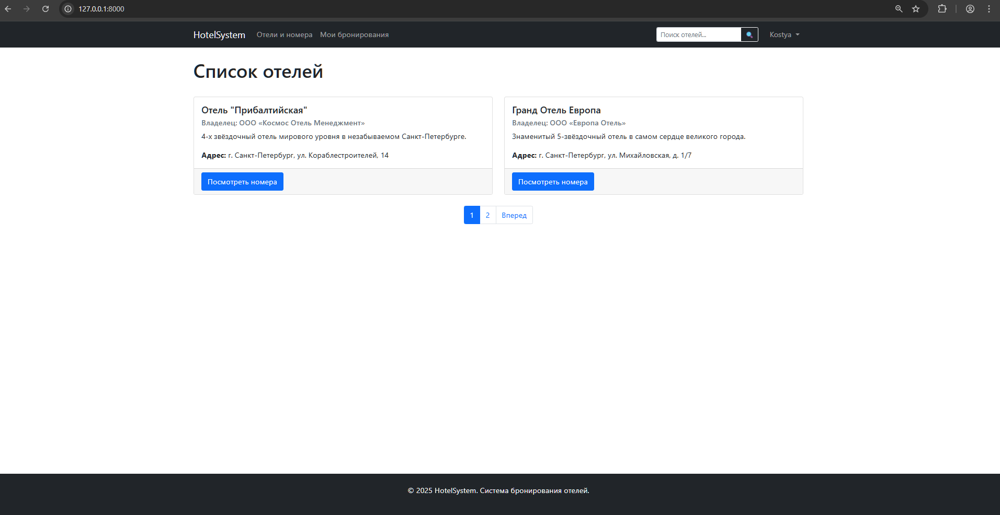
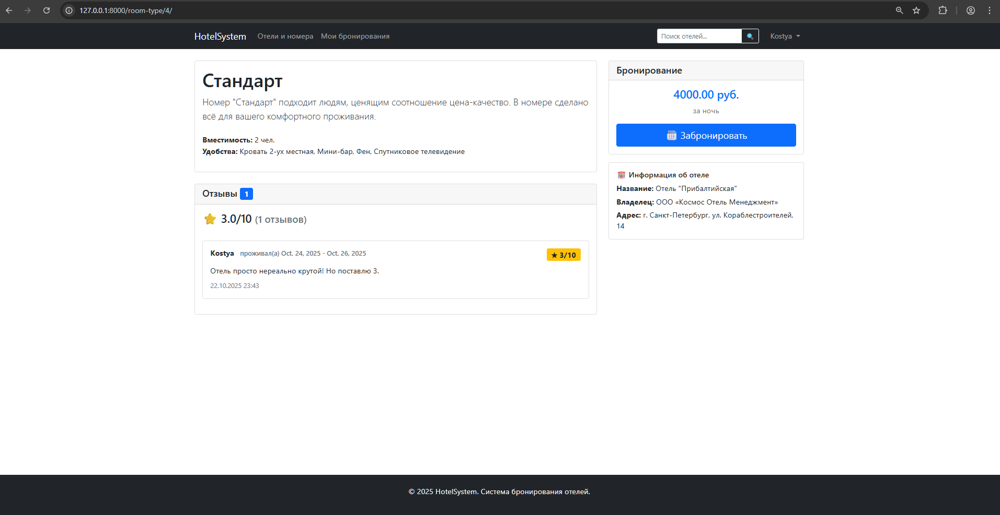
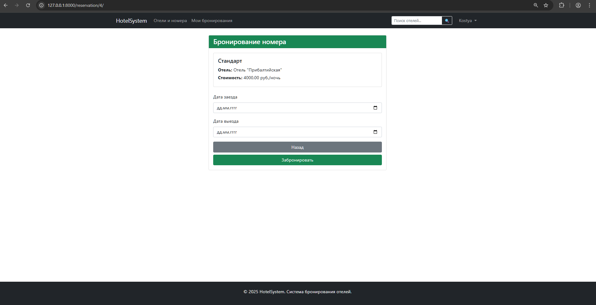

РЕАЛИЗАЦИЯ ПРОСТОГО САЙТА СРЕДСТВАМИ DJANGO
Цель
Овладеть практическими навыками и умениями реализации web-сервисов средствами Django 2.2.
Практическое задание
Реализовать сайт используя фреймворк Django 3 и СУБД PostgreSQL*, в соответствии с вариантом задания лабораторной работы.
Вариант: 1 (по списку 7)
Список отелей
Необходимо учитывать название отеля, владельца отеля, адрес, описание, типы
номеров, стоимость, вместимость, удобства.
Необходимо реализовать следующий функционал:
- Регистрация новых пользователей.
- Просмотр и резервирование номеров. Пользователь должен иметь возможность редактирования и удаления своих резервирований.
- Написание отзывов к номерам. При добавлении комментариев, должны сохраняться период проживания, текст комментария, рейтинг (1-10), информация о комментаторе.
- Администратор должен иметь возможность заселить пользователя в отель и
выселить из отеля средствами Django-admin.
- В клиентской части должна формироваться таблица, отображающая постояльцев отеля за последний месяц.
Решение
Структура проекта
hotels/
├── manage.py
├── hotels/
│ ├── __init__.py
│ ├── settings.py
│ ├── urls.py
│ ├── asgi.py
│ └── wsgi.py
├── hotel_management/ # Основное приложение
│ ├── __init__.py
│ ├── admin.py # Админ-панель
│ ├── apps.py
│ ├── tests.py # Тесты (отсутствуют)
│ ├── models.py # Модели данных
│ ├── views.py # Представления (CBV)
│ ├── forms.py # Формы с валидацией
│ ├── urls.py # Маршруты приложения
│ ├── mixins.py # Кастомные миксины
│ ├── templates/ # Шаблоны приложения
│ │ └── hotel_management/
│ │ └── add_review.html # Шаблон страницы создания отзыва на номер в отеле
│ │ └── base.html # Шаблон для шапки и подвала сайта. Является базовым для других шаблонов
│ │ └── delete_reservation.html # Шаблон страницы отмены (удаления) резервирования
│ │ └── edit_reservation.html # Шаблон страницы редактирования параметров резервирования
│ │ └── guests_last_month.html # Шаблон страницы с таблицой посетителей отелей
│ │ └── hotel_detail.html # Шаблон страницы с подробной информацией об отеле и доступных типах номеров
│ │ └── hotel_list.html # Шаблон страницы со списком отелей
│ │ └── login.html # Шаблон страницы авторизации
│ │ └── make_reservation.html # Шаблон страницы оформления резервирования
│ │ └── my_reservations.html # Шаблон страницы со списком резервирований пользователя
│ │ └── register.html # Шаблон страницы регистрации
│ │ └── room_type_detail.html # Шаблон страницы с описанием типа номера
│ │ └── search_results.html # Шаблон страницы с найденными по поисковому запросу отелями
│ └── migrations/
│ └── __init__.py
│ └── 0001_initial.py
│ └── 0002_remove_room_hotel_roomtype_hotel.py
Модели:
Hotel - отели (название, владелец, адрес, описание)
RoomType - типы номеров (название, описание, отель, стоимость, вместимость, удобства)
Room - конкретные комнаты (тип номера, номер комнаты)
Reservation - бронирования (пользователь, комната, дата заезда, дата выезда, статус, дата создания, дата обновления)
Review - отзывы (номер бронирования, рейтинг 1-10, комментарий, дата создания)
Возможности системы
Для всех пользователей (без авторизации):
- Просмотр списка отелей;
- Поиск по названию отеля;
- Просмотр информации об отелях и номерах;
- Просмотр отзывов о номерах;
- Регистрация и вход в систему.
Для авторизованных пользователей:
- Бронирование номеров с проверкой доступности;
- Редактирование и отмена своих бронирований;
- Написание отзывов после выселения;
- Личный кабинет с историей бронирований.
Для персонала (администраторов):
- Доступ к админ-панели;
- Редактирование бронирований;
- Просмотр всех гостей за период;
- Заселение и выселение гостей.
В проекте используется bootstrap, настроена пагинация для списка отелей, настроен поиск по названию отеля.
Скриншоты работы сайта
Стартовая страница

Информация о номере в отеле

Создание нового резервирования
